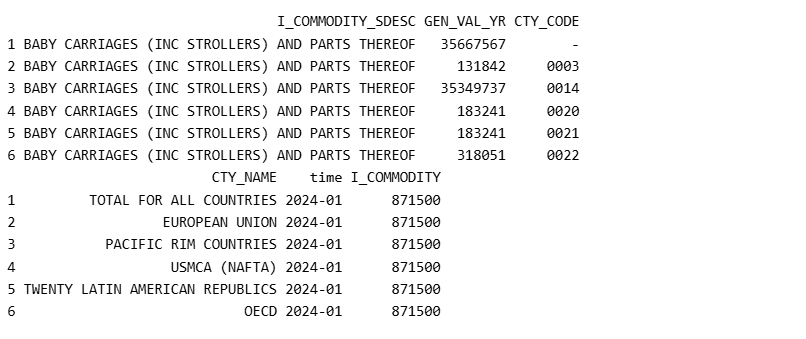

Torsten Slok, Apollo’s Chief Economist, post the import China for a number of products at his daily spark website. The first product category is baby carriages. 97% of baby carriages are imported from China. Can we verify this?
The Census Bureau Trade Data API
The API call has five components: a common base url and four additional requirements. The base url is
The selection of type of trade, imports or exports.
The selection of one of nine endpoints, i.e. one of nine commodity classification systems.
The list of variables to be downloaded
The query for the API request
Baby Carriage codes
First, to confirm the import of baby carriages from China, our focus is on imports.
Second, we will use the classification of baby carriages within the harmonized tariff system (HTS). The reference page of the trade data of the Census bureau has a concordance for imports and exports. One can read the file into R and grep for “carriages” or use ctrl-F to search for “carriages” on the webpage. We find the following two HTS codes:
8715000020 BABY CARRIAGES (INCLUDING STROLLERS)
8715000040 PARTS OF BABY CARRIAGES
We will use the first four digits to download both categories.
Third, we can search for the variables we want to download using the following url:
where the selection of “imports” is consistent with our first choice above and “hs” is the abbreviation for the HTS.
We will select the following variables:
I_COMMODITY: the commodity code for the import
I_COMMODITY_SDESC: the short description for the import associated with the commodity code
GEN_VAL_YR: 15-digit Year-to-Date General Imports, Total Value
CTY_CODE: the country code
CTY_NAME: the country name
The fourth item is the filter or query: we want the trade data from January 2024 and we want to select all the 10-digit hs codes that fall within the 4-digit HS code “8715”.
R code
In the code below, we list the base url and the four additional inputs, l1 to l4. These five strings are concated uisng the paste0 function. It is important to note that the string “?get=” follows the endpoint, each variable is separated by a comma and the clauses of the query are separated by ampersands. The asterisk at the end of “8715*” is a wild card that allows all ten digit HTS commodities that begin with the same 4-digits to be pulled.
base <-"https://api.census.gov/data/timeseries/intltrade/"l1 <-"imports"l2 <-"hs"l3 <-"I_COMMODITY_SDESC,GEN_VAL_YR,CTY_CODE,CTY_NAME"l4 <-"time=from+2024-01&I_COMMODITY=87150*"api_call <-paste0(base,l1,"/",l2,"?get=",l3,"&",l4)print(api_call)
The api call can be cut-and-pasted into a browser to retrieve the data or one can use the GET function of the httr package to retrieve the data so that it can be manipulated in R.
The jsonlite package is required because the API returns data in the JSON format.
I_COMMODITY_SDESC GEN_VAL_YR CTY_CODE
1 BABY CARRIAGES (INC STROLLERS) AND PARTS THEREOF 35654928 -
2 BABY CARRIAGES (INC STROLLERS) AND PARTS THEREOF 131842 0003
3 BABY CARRIAGES (INC STROLLERS) AND PARTS THEREOF 35337098 0014
4 BABY CARRIAGES (INC STROLLERS) AND PARTS THEREOF 183241 0020
5 BABY CARRIAGES (INC STROLLERS) AND PARTS THEREOF 183241 0021
6 BABY CARRIAGES (INC STROLLERS) AND PARTS THEREOF 318051 0022
CTY_NAME time I_COMMODITY
1 TOTAL FOR ALL COUNTRIES 2024-01 871500
2 EUROPEAN UNION 2024-01 871500
3 PACIFIC RIM COUNTRIES 2024-01 871500
4 USMCA (NAFTA) 2024-01 871500
5 TWENTY LATIN AMERICAN REPUBLICS 2024-01 871500
6 OECD 2024-01 871500
 We can confirm that the API call has returned the data we requested including a 6-digit aggregation.
The variable GEN_VAL_YR, the year-to-date value of imports, is converted to numeric because it is read in as a string. By selecting the “time” variable that has the 12th month, we can obtain the annual value of imports.
When downloading country code (CTY_CODE) and country name (CTY_NAME), we also obtain imports by various regions, e.g. “European Union”, Pacific Rim Countries”, etc. The table available in Appendix E of the API User Guide lists the country groupings. It is useful to save this table as a csv file so that it can be used to omit country groupings when not needed. In addition to the country groupings, total imports is also included and this can be excluded if not needed.